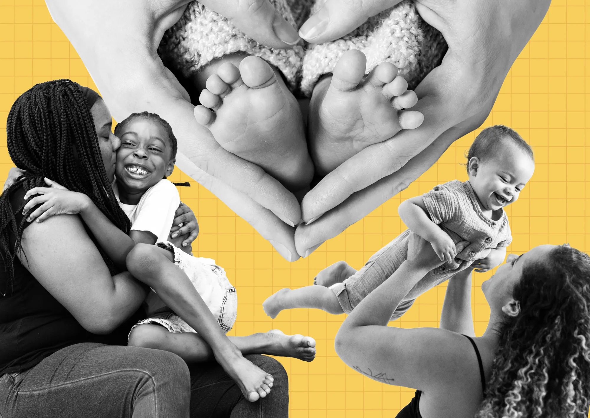

Economía circular
Un Modelo Sostenible para el Futuro
Colombia cuenta con recursos naturales limitados y una creciente presión ambiental, la transición hacia una economía circular se posiciona como una necesidad estratégica y ética. Este modelo propone un cambio paradigmático respecto a la economía lineal tradicional, basada en el esquema de "extraer, usar y desechar". En contraste, la economía circular busca maximizar el valor de los recursos al promover el reciclaje, la reutilización y la reducción de residuos.
El reciclaje es una herramienta clave dentro de este enfoque, ya que permite transformar residuos en recursos útiles.
Al reincorporar materiales como plástico, vidrio, papel o metales al ciclo productivo, se reduce la necesidad de extraer materias primas vírgenes, mitigando así el impacto ambiental. Además, fomenta la generación de empleos verdes y estimula la innovación en procesos y tecnologías más sostenibles.
Es asi como buscamos proyectos que realizan actividades con reducción de huella de carbono y reutilización de materiales va más allá del reciclaje, prolongando la vida útil de productos y evitando su disposición prematura. Este enfoque no solo disminuye la demanda de recursos nuevos, sino que también incentiva prácticas responsables tanto en la producción como en el consumo. Por ejemplo, industrias como la construcción, la moda y la tecnología han adoptado iniciativas exitosas de reutilización que benefician tanto al medio ambiente como a las economías locales.